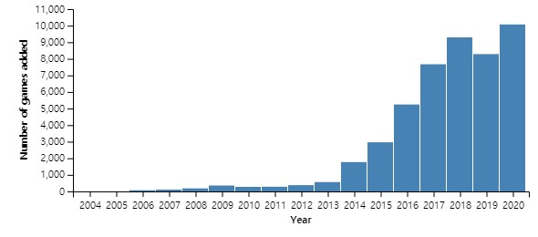
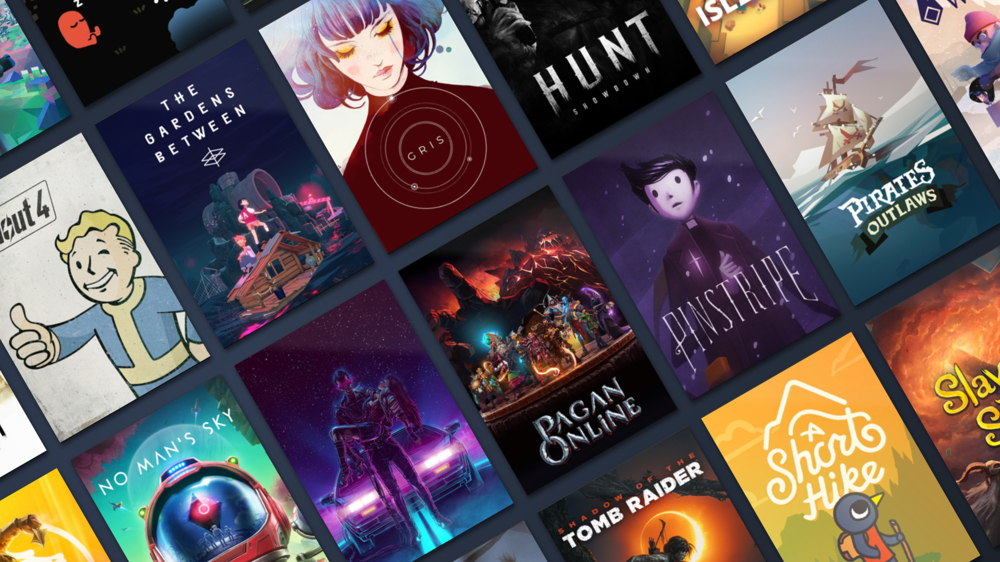

밸브 코퍼레이션에서 개발한 디지털 관리 멀티플레이어 플랫폼이다. 처음의 스팀 서비스는 2003년 9월 12일 시작되어 현재에도 서비스 되고 있으며, 일인칭 슈팅 게임부터 롤플레잉 게임, 레이싱 게임 그리고 독립 게임까지 다양한 게임을 디지털로 관리하며 배급한다.
테이크투 인터랙티브, 록스타 게임스, 에이도스 인터랙티브, 인트로버전 소프트웨어, 스트레티지 퍼스트, 팝캡 게임즈, 캡콤, 이드 소프트웨어, THQ, 일렉트로닉 아츠, 유비소프트, 2K 게임즈, 워너 브라더스, 액티비전 등이 스팀에서 게임을 판매하고 있다.
수많은 게임이 이용 가능하며, 2억 명의 사람들이 가입, 동시접속자는 약 1000 ~ 1300 만 규모이다. 2010년 3월 8일에는 OS X도 지원하기 시작하였다. 2013년 2월 14일 부터 우분투를 비롯한 리눅스에서도 플레이가 가능해졌다.

[스팀이 배급한 게임 수]
밸브는 1998년 하프라이프 출시에 앞서 1997년 시에라 스튜디오와 배급 계약에 들어갔다. 이 계약은 배급 통제 외에도 지식재산(IP)권을 시에라에 부여하였다. 밸브는 시에라를 통해 추가 게임을 배급하였고 여기에는 하프라이프, 카운터스트라이크의 확장팩이 포함된다.
1999년 즈음, 밸브는 하프라이프 2와 새로운 소스 엔진 작업을 시작하였고 IP권과 관련하여 시에라와의 계약에 관한 걱정을 하게 되면서 두 회사는 2001년 새 계약을 재협상하기에 이른다. 이 새 계약은 시에라의 IP권을 축소시켰고 밸브에게 게임의 디지털 배급권을 부여하게 되었다.
이 즈음 밸브는 배급된 게임의 업데이트에 문제가 있었다. 다운로드 가능한 패치를 제공할 수는 있었지만 다인용 게임의 경우 새 패치로 인해 모든 이들이 패치를 적용받을 때까지 수일 간 온라인 사용자 기반 대부분이 접속 중단을 겪어야 했다. 밸브는 자동으로 게임을 업데이트하고 더 강력한 복사 보호와 치트 방지책을 구현하는 플랫폼을 만들기로 결심하였다. 2002년 발표 당시 사용자 투표를 통해 밸브는 사용자들 중 적어도 75%가 고속 인터넷 속도에 접근할 수 있고 앞으로 수년에 걸쳐 예정된 브로드밴드 확장에 따른 성장이 계속될 것으로 인식했으며 리테일 채널보다 더 빠른 속도로 게임 콘텐츠를 플레이어에게 전달할 수 있을 것으로 내다보았다.
밸브는 이 기능을 갖춘 클라이언트를 빌드하기 위해 마이크로소프트, 야후!, 리얼네트웍스 등 여러 기업과 접촉하였으나 성사되지는 못했다.
스팀의 개발은 2002년 시작되었고 당시 플랫폼의 가제는 Grid와 Gazelle였다.
2002년 3월 22일 게임 개발자 콘퍼런스에서 공식 발표되었고 같은 날 베타 테스트로 출시되었다. 스팀과 게임의 쉬운 연동을 증명하기 위해 렐릭 엔터테인먼트는 임파서블 크리처스의 특별판을 개발했다. 밸브는 AT&T, 에이서, 게임스파이 등 여러 기업과 파트너십을 맺었다. 이 시스템 상에 출시된 첫 모드(mod)는 데이 오브 디피트였다.
2002년, 밸브의 사장 Gabe Newell은 모드 팀들에게 스팀을 통한 게임 라이선스와 배급권을 995달러에 제공하고 있었음을 언급했다.
80,000~300,000명의 플레이어가 베타 테스트에 참가한 이후 2003년 9월 12일 스팀의 공식 릴리스가 출시되었다. 2005년을 기점으로 밸브는 래드돌 쿵푸, Darwinia 등의 제품들을 스팀에 출시할 수 있도록 여러 서드파티 배급자들과 계약 협상을 시작했다. 밸브는 매우 성공적인 밸브 게임들로 인해 스팀이 수익을 낼 수 있었음을 발표했다.

스팀은 수천가지 이상의 다양한 게임을 판매하고 있으며, 게임을 구매하면 사용자의 라이브러리로 해당 게임의 사용권이 등록된다. 사용자의 게임 라이브러리에서 언제, 어디서든지 계정 정보만 있으면 손쉽게 게임을 다운로드받아 즐길 수 있으며, 스팀에 등록된 게임은 실시간으로 자동 업데이트 된다.
구매한 게임에 대한 정보를 한눈에 조회할 수 있고, 라이브러리를 사용자의 취향에 맞게 편집하여 더욱 손쉽게 즐길 수 있다.
또한 특정 게임 상품 구매 시 게임 개발 키트(SDK)를 제공받아 각종 유저 제작 컨텐츠를 제작,편집할 수 있으며, 사설 서버를 제공받아 운영할 수 있다.
스팀 클라우드는 스팀 내 클라우드 컴퓨팅 기술이다. 스팀에서 판매하는 대다수의 게임들은 스팀 클라우드 시스템을 지원하며, 이 시스템을 사용할 경우 게임의 진행 기록(저장 파일)이 자동으로 스팀 클라우드 서버에 업로드 된다. 따라서 하드웨어의 물리적 데이터 이동 없이 계정 정보만 있으면 어떠한 컴퓨터에서도 스팀에 저장된 클라우드 세이브 파일로 진행이 가능하다.